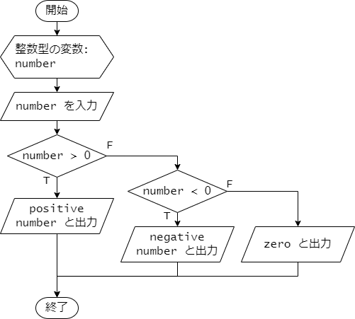
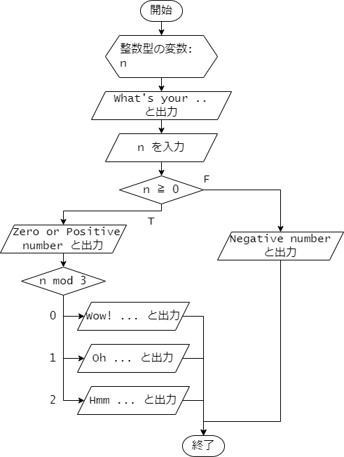

第 6 章 : 分岐処理
6.1 : if 文
例題 6-1 : if 文
ある条件が成り立つか、 成り立たないかによって行う処理を分岐させるには、 if 文を使います。
次のプログラムは、if 文を使って、
入力された数値が正の数かどうかを判定し、
正の数であれば positive number と表示し、
そうでなければ何も表示しないプログラムです。
positive.c
#include <stdio.h>
int main(void) {
int number;
scanf("%d", &number);
if (number > 0) {
printf("positive number\n");
}
return 0;
}
if の後に続く条件式 number > 0 が真のとき、
{ と } で囲まれたブロック内の文が実行されます。
すなわち、mumber が正の数の時は、
printf("positive number\n"); が実行され、
positive number と表示されます。
条件式が偽、すなわち、mumber がゼロまたは負の数の場合は、
ブロック内の文は実行されず、なにも表示されません。
このプログラムの処理の流れを示すフローチャートを次に示します。

プログラムの実行結果を示します。
1 行目は、入力された数値を表しています。
正の数を入力した場合は、positive number と表示されます。
terminal
42
positive number
負の数を入力した場合は、何も表示されません。
terminal
-1
例題 6-2 : else 文
if 文の後に else を続けることで、
条件式が偽の場合に実行する文を指定できます。
次のプログラムは、入力された数値が正の数かどうかを判定し、
正の数であれば positive number と表示し、
そうでなければ zero or negative number と表示するプログラムです。
positive_negative.c
#include <stdio.h>
int main(void) {
int number;
scanf("%d", &number);
if (number > 0) {
printf("positive number\n");
} else {
printf("zero or negative number\n");
}
return 0;
}
if 文の条件式 number > 0 が成り立つときは、
続くブロック内の文 printf("positive number\n"); が実行されます。
条件式が成り立たないとき、すなわち、number がゼロまたは負の数のときは、
else の後に続くブロック内の文
printf("zero or negative number\n"); が実行されます。
このプログラムの処理の流れを示すフローチャートを次に示します。

プログラムの実行結果を示します。
1 行目は、入力された数値を表しています。
正の数を入力した場合は次のように、positive number と表示されます。
terminal
42
positive number
負の数を入力した場合は、zero or negative number と表示されます。
terminal
-1
zero or negative number
ゼロを入力した場合も、zero or negative number と表示されます。
terminal
0
zero or negative number
例題 6-3 : else if 文
if 文の後に else if を続けることで、
最初の条件式が偽の場合に、
さらに別の条件式を指定して処理を分岐させることができます。
次のプログラムは、入力された数値が正の数かどうかを判定し、
正の数であれば positive number 、
負の数であれば negative number 、
ゼロであれば zero と表示するプログラムです。
positive_negative_zero.c
#include <stdio.h>
int main(void) {
int number;
scanf("%d", &number);
if (number > 0) {
printf("positive number\n");
} else if (number < 0) {
printf("negative number\n");
} else {
printf("zero\n");
}
return 0;
}
if 文の最初の条件式 number > 0 が成り立つときは、
続くブロック内の文 printf("positive number\n"); が実行されます。
条件式が成り立たないときは、else if に続く条件式 number < 0 が評価されます。
この条件式 number < 0 が成り立つときは、
続くブロック内の文 printf("negative number\n"); が実行されます。
最初の条件式も、2 番目の条件式も成り立たないときは、
最後の else に続くブロック内の文 printf("zero\n"); が実行されます。
このプログラムの処理の流れを示すフローチャートを次に示します。

プログラムの実行結果を示します。
1 行目は、入力された数値を表しています。
正の数を入力した場合は次のように、positive number と表示されます。
terminal
42
positive number
負の数を入力した場合は、negative number と表示されます。
terminal
-1
negative number
ゼロを入力した場合は、zero と表示されます。
terminal
0
zero
例題 6-4 : 複雑な条件式
if 文の条件式には、複数の条件を組み合わせることができます。
次のプログラムは、室温として実数値を入力したときに、
入力された数値が 15.0 以上 25.0 未満であれば、
comfortable と表示し、
そうでなければ uncomfortable と表示するプログラムです。
room_temperature.c
#include <stdio.h>
int main(void) {
double temperature;
printf("temperature? ");
scanf("%lf", &temperature);
if (15.0 <= temperature && temperature < 25.0) {
printf("comfortable\n");
} else {
printf("uncomfortable\n");
}
return 0;
}
if 文の条件式 15.0 <= temperature && temperature < 25.0 は、
論理積 && ( AND ) で結合された 2 つの条件式 15.0 <= temperature と
temperature < 25.0 が両方とも成り立つときに真となります。
すなわち、temperature が 15.0 以上 25.0 未満のときに真となります。
条件式を 15.0 <= temperature < 25.0 のようには記述しないことに注意してください。
このように記述すると意図した通りには動作しません。
プログラムの実行結果を示します。 1 行目の数値の部分は、入力された数値を表しています。
21.5 を入力した場合は、条件式が真となるので、
次のように、comfortable と表示されます。
terminal
temperature? 21.5
comfortable
30.0 を入力した場合は、条件式が偽となるので、
次のように、uncomfortable と表示されます。
terminal
temperature? 30.0
uncomfortable
6.2 : switch 文
例題 6-5 : switch 文
条件によって分ける処理の分岐が多い場合、 switch 文を使うとプログラムを簡潔に書くことができます。
次のプログラムは、char 型の値を入力して、
入力された値に応じて曜日を表示するプログラムです。
プログラムの動作をより詳しく説明すると、
各曜日 Monday, Tuesday, Wednesday, Thursday, Friday, Saturday, Sunday の
頭文字の大文字 M, T, W, F, S を入力すると
該当する曜日を表示し、それ以外の文字を入力すると invalid と表示します。
weekday1.c
#include <stdio.h>
int main(void) {
char weekday_initial;
scanf("%c", &weekday_initial);
switch (weekday_initial) {
case 'M':
printf("Monday\n");
break;
case 'T':
printf("Tuesday or Thursday\n");
break;
case 'W':
printf("Wednesday\n");
break;
case 'F':
printf("Friday\n");
break;
case 'S':
printf("Saturday or Sunday\n");
break;
default:
printf("invalid\n");
break;
}
return 0;
}
switch 文ではまず制御式を指定します。
このプログラムでは、char 型の変数 weekday_initial を指定しています。
続く{ と } で囲まれたブロック内には、
switch 文で行う処理を記述しますが、
このブロック内には処理を分岐させるために、分岐先を示す
case および default で構成される複数のラベルを記述します。
このプログラムでは case 'M': から case 'S': までの
5 つの case を使ったラベルと
default: がラベルとなっています。
switch 文では制御式を評価し、
その値に応じて、case で指定した値と一致するかどうかを上から順に調べます。
一致する case が見つかったら、そこへ処理がジャンプします。
なお、制御式で評価される値、および case で指定する値は、
整数値(int 型の値など)や文字(char 型の値)である必要があります。
このプログラムにおいては、例えば、weekday_initial が 'T' であれば、
case 'T': に処理がジャンプし、
printf("Tuesday or Thursday\n"); が実行されます。
続く break は、switch 文を抜けるための命令です。
これにより、switch 文のブロックを抜けるので、
続く case 'W': 以降の処理は実行されません。
(break がないと、次の case の処理が続けて実行されてしまいます。)
制御式で評価した値と一致する case が見つからない場合は、
default: に処理がジャンプします。
プログラムでは、weekday_initial が 't' である場合には、
case で指定した値と一致するものがないため、
default: に処理がジャンプし、
printf("invalid\n"); が実行されます。
プログラムの処理の流れをフローチャートに示すと次のようになります。

プログラムの実行結果を示します。 1 行目は、入力された文字を表しています。
M を入力した場合の実行結果です。
terminal
M
Monday
T を入力した場合の実行結果です。
terminal
T
Tuesday or Thursday
小文字の t を入力した場合の実行結果です。
この時はどの case にも当てはまらないので、
default に処理がジャンプし、invalid と表示されます。
terminal
t
invalid
例題 6-6 : switch 文の fall-through
例題 6-5 のプログラムでは、
各曜日 Monday, Tuesday, Wednesday, Thursday, Friday, Saturday, Sunday の
頭文字の大文字 M, T, W, F, S を入力すると
該当する曜日を表示してくれました。
次のプログラムは、各曜日の頭文字の小文字 m, t, w, f, s
の入力にも対応できるよう拡張したものです。
weekday2.c
#include <stdio.h>
int main(void) {
char weekday_initial;
scanf("%c", &weekday_initial);
switch (weekday_initial) {
case 'M':
case 'm':
printf("Monday\n");
break;
case 'T':
case 't':
printf("Tuesday or Thursday\n");
break;
case 'W':
case 'w':
printf("Wednesday\n");
break;
case 'F':
case 'f':
printf("Friday\n");
break;
case 'S':
case 's':
printf("Saturday or Sunday\n");
break;
default:
printf("invalid\n");
break;
}
return 0;
}
このプログラム中の switch 文では、例題 6-6 と同様に
char 型の変数 weekday_initial を制御式として指定しています。
いま、weekday_initial の値が T である場合を考えます。
このとき、ラベル case 'T': の場所に処理がジャンプします。
case 'T': の後には、命令が無く、特に break もありません。
したがって、処理は次の case 't': の場所に続きます。
ここには、printf("Tuesday or Thursday\n"); という命令があるので、
Tuesday or Thursday と表示されます。
続いて、break があるので、switch 文を抜けます。
仮に weekday_initial の値が t であった場合には、
処理が case 't': にジャンプするので、
Tuesday or Thursday と表示され、続く break により、
switch 文での処理は終了します。
このように、case の後に break がない場合では、
処理は次の case に続きます。
このプログラムの実行例を示します。 1 行目は、入力された文字を表しています。
T を入力した場合の実行結果です。
terminal
T
Tuesday or Thursday
t を入力した場合の実行結果です。
terminal
t
Tuesday or Thursday
大文字の T と小文字の t のどちらを入力した場合も、
Tuesday or Thursday と表示されているのがわかります。
例題 6-7 : if 文と switch 文の混在
if 文どうしや switch 文どうしを組み合わせたり、 if 文と switch 文を組み合わせることことで、 複雑な分岐処理を実現することができます。
次のプログラムは、if 文と switch 文を組み合わせた例です。 ユーザーから入力された整数値に応じて、 表示を変えるプログラムです。
if_switch.c
#include <stdio.h>
int main(void) {
int n;
printf("What's your favorite number? ");
scanf("%d", &n);
if (n >= 0) {
printf("Zero or Positive number.\n");
switch (n % 3) {
case 0:
printf("Wow! You've entered a multiple of 3! That's a shining and magnificent number, indeed! Well done! \n");
break;
case 1:
printf("Oh. That's a decently good number.\n");
break;
case 2:
printf("Hmm. That's not such a bad number.\n");
break;
}
} else {
printf("Negative number.\n");
}
return 0;
}
このプログラムでは、まず if 文で、
int 型の変数 n の値に対する条件 n >= 0
が真であるかどうかを判定して、
次の1. 2. のように分岐が行われます。
-
n >= 0が真である場合 : まずZero or Positive number.と表示されます。 続いて、switch 文によりnを 3 で割った余り (n % 3) に応じてさらに分岐が行われます。n % 3の値が 0 の場合 :Wow! ...と表示されます。n % 3の値が 1 の場合 :Oh. ...と表示されます。n % 3の値が 2 の場合 :Hmm. ...と表示されます。
-
n >= 0が偽である場合 :Negative number.と表示されます。
プログラムのフローチャートを示します。 フローチャートと、 プログラム中の if 文と switch 文を見比べて、 構造が一致していることを確認してください。

プログラムの実行結果を示します。 1行目の行末の数値が、入力された数値を表しています。
n として 42 を入力した場合の実行結果です。
42 は 0 以上の数なので、Zero or Positive number. と表示されます。
さらに、42 を 3 で割った余りは 0 なので、
Wow! ... と表示されます。
terminal
What's your favorite number? 42
Zero or Positive number.
Wow! You've entered a multiple of 3! That's a shining and magnificent number, indeed! Well done!
43 を入力した場合の実行結果です。
43 は 0 以上の数なので、Zero or Positive number. と表示されます。
43 を 3 で割った余りは 1 なので、
Oh. ... と表示されます。
terminal
What's your favorite number? 43
Zero or Positive number.
Oh. That's a decently good number.
-1 を入力した場合の実行結果です。
-1 は 0 以上ではないため、
Negative number. とだけ表示されます。
terminal
What's your favorite number? -1
Negative number.
演習
演習 6-1
架空のS水族館は、入場者の年齢によって入場料が決まります。 年齢と入場料の対応は以下の表のとおりです。
| 券種 | 年齢 | 入場料(円) |
|---|---|---|
| 大人 | 13歳以上65歳未満 | 2400 |
| 子供 | 13歳未満 | 1200 |
| シニア | 65歳以上 | 1800 |
年齢を入力すると、入場料を出力するプログラムを作成してください。 なお、年齢は0以上の整数で入力されるものとします。
期待される実行結果は以下の通りです。
terminal
13
2400 yen
terminal
10
1200 yen
演習 6-2
次のプログラムを作成して、実行結果を確認してください。
fizzbuzz.c
#include <stdio.h>
int main(void) {
int max_count;
printf("Enter the maximum count: ");
scanf("%d", &max_count);
for (int count = 1; count <= max_count; count++) {
if ((count % 3 == 0) && (count % 5 == 0)) {
printf("FizzBuzz\n");
} else if (count % 3 == 0) {
printf("Fizz\n");
} else if (count % 5 == 0) {
printf("Buzz\n");
} else {
printf("%d\n", count);
}
}
return 0;
}